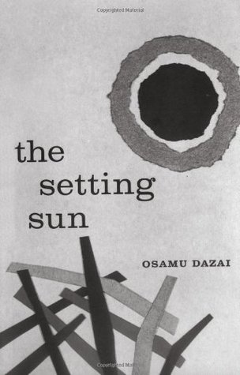

My favourite books

The post-war period in Japan was one of immense social change as Japanese society
adjusted to the shock of
defeat and to the occupation of Japan by American forces and their allies. Osamu Dazai’s The Setting Sun
takes
this milieu as its background to tell the story of the decline of a minor aristocratic family.
The story is told through the eyes of Kazuko, the unmarried daughter of a widowed aristocrat. Her search for
self meaning in a society devoid of use for her forms the crux of Dazai’s novel. It is a sad story, and
structurally is a novel very much within the confines of the Japanese take on the novel in a way reminiscent
of
authors such as Nobel Prize winner Yasunari Kawabata – the social interactions are peripheral and
understated,
nuances must be drawn, and for readers more used to Western novelistic forms this comes across as being
rather
wishy-washy.
Kazuko’s mother falls ill, and due to their financial circumstances they are forced to take a cottage in the
countryside. Her brother, who became addicted to opium during the war is missing. When he returns, Kazuko
attempts to form a liaison with the novelist Uehara. This romantic displacement only furthers to deepen her
alienation from society.

In Anthony Burgess's influential nightmare vision of the future, criminals take over after dark. Teen gang
leader Alex narrates in fantastically inventive slang that echoes the violent intensity of youth rebelling
against society. Dazzling and transgressive, A Clockwork Orange is a
frightening fable about good and evil
and the meaning of human freedom. This edition includes the controversial last chapter not published in the
first edition, and Burgess’s introduction, “A Clockwork Orange Resucked.”